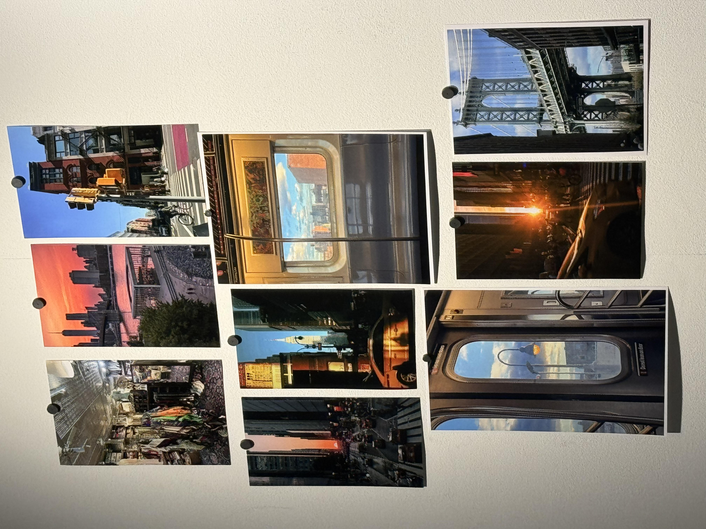
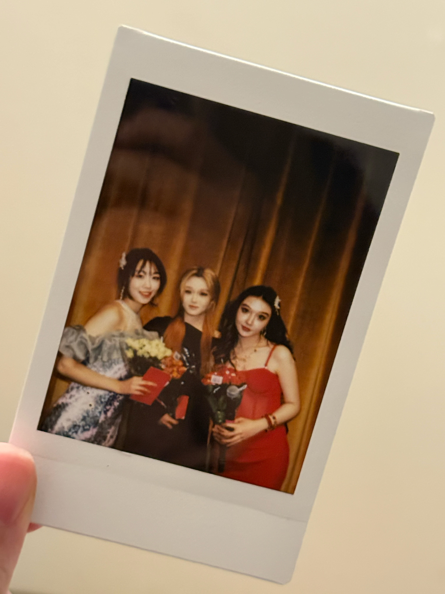
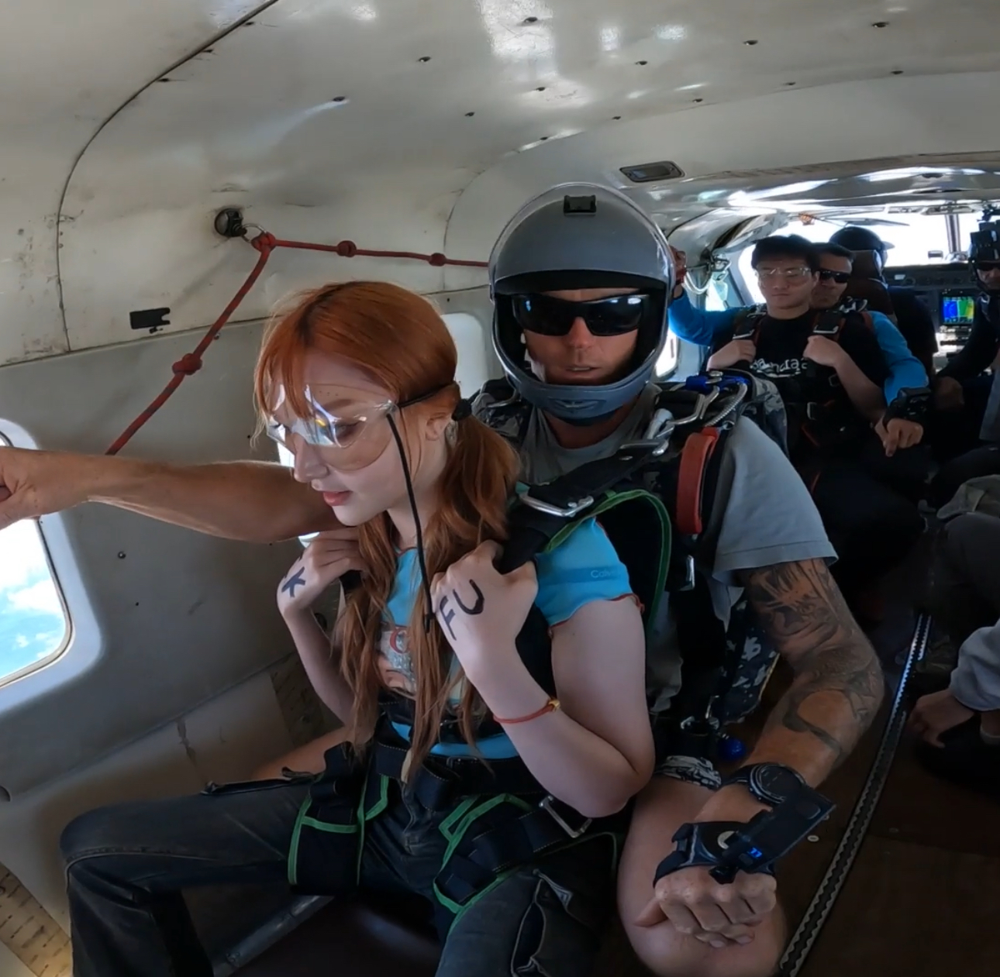
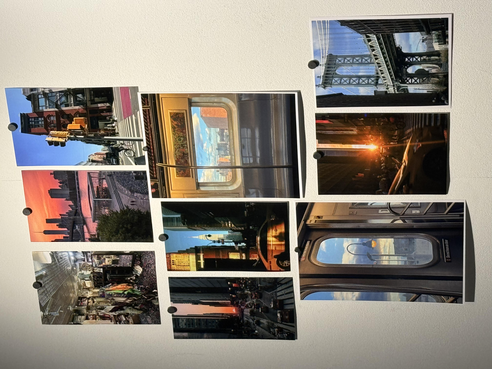
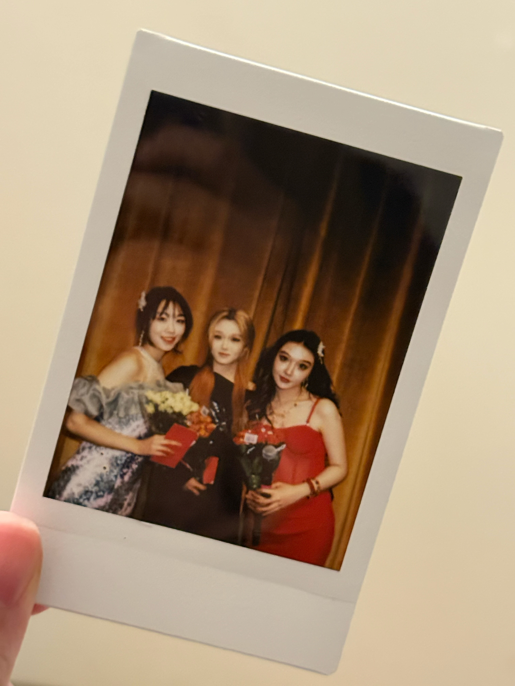
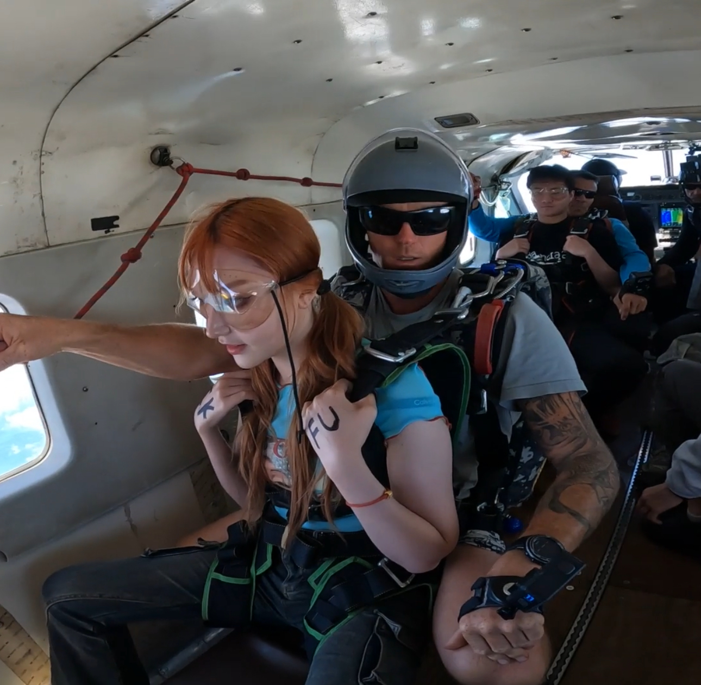

About Me

I am a Business, Digital Media, and Computer Science triple major at the University of Rochester, with a 3.97/4.00 GPA. My passion lies in technology, design, and business innovation—creating impactful digital solutions that bridge strategic thinking, creative storytelling, and technical expertise.
My diverse academic background allows me to explore the intersections of business strategy, user-centered digital experiences, and technical development. I have applied my knowledge to investment consulting, e-commerce management, digital marketing, and community-driven projects. My past work includes designing an alumni system for Wild Center, leading community projects in Rochester, and developing branding and marketing strategies for JCC Township.
Learn MoreWork Experience
- 💼 Fund Investment Consultant Intern - Bank of The Communication, Shenzhen (2023)
- 📈 Cross-border E-commerce Intern - PwC Strategy& (2024)
- 🌍 Digital Marketing & Web Operations - WeiWeiDu Co. Ltd (2024 - Present)
- 🏙 Community Project Designer - Luocun Community (2024)
- 🏡 JCC Township Expansion & Branding - Strategic Marketing & Development (2024)
- 🛒 Founder & E-Commerce Manager - Online Retail Business (2023 - Present)
Current Projects
🏡 JCC Township Expansion
Developing a branding and marketing strategy to grow the JCC community.
🌍 Wild Center Alumni System
Designed a scalable alumni network to enhance engagement and communication.
🎮 Video Game Design
Exploring the intersection of digital media and interactive storytelling.
Photos about my life
 





Let's Connect
I'm always open to discussions, collaborations, and new opportunities! Feel free to reach out.
Contact Me